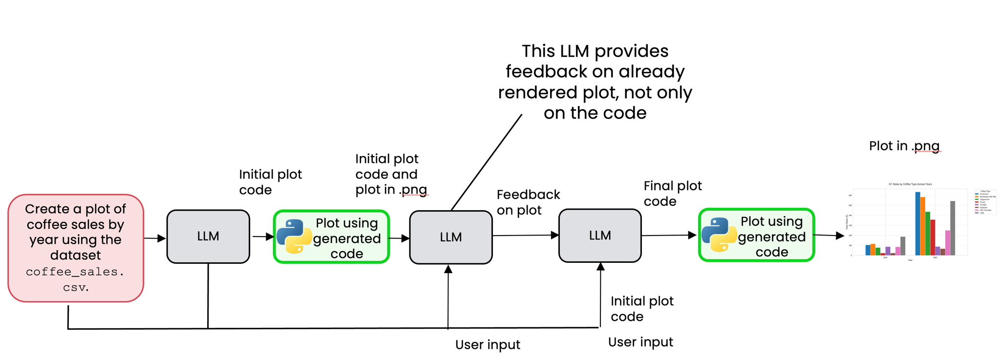
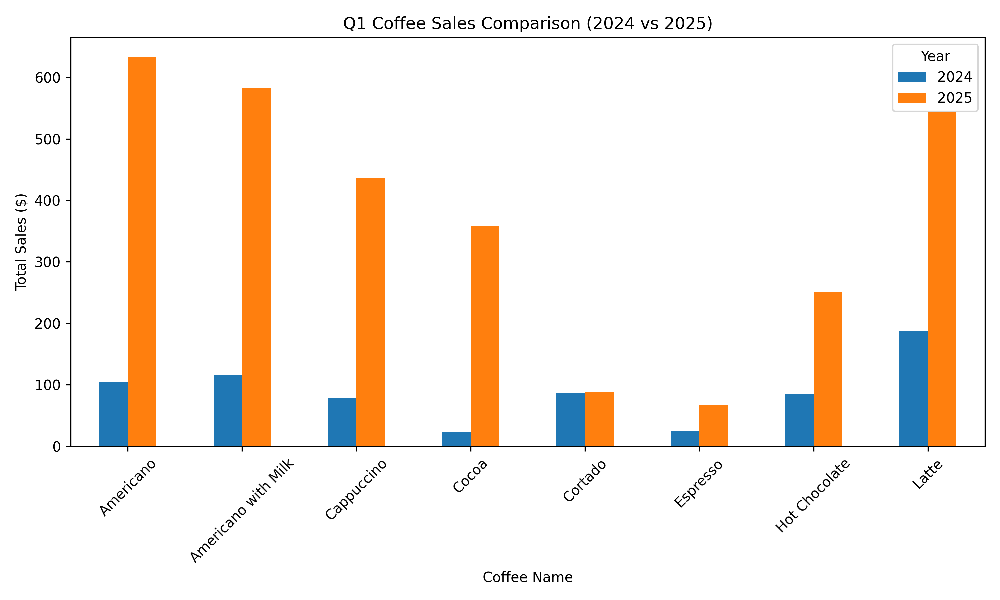
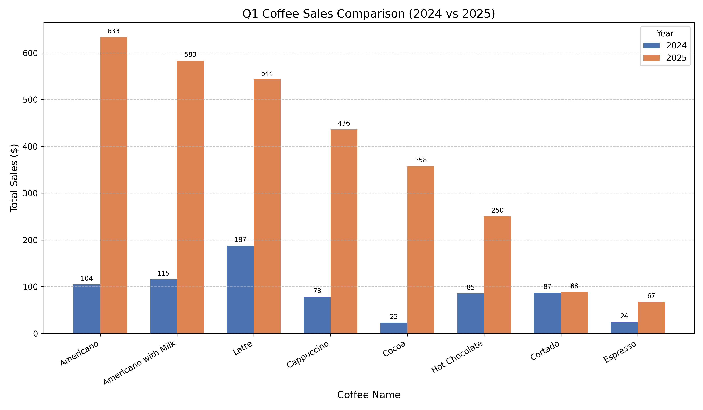

Yansıma Deseni ile Grafik Üretimi
Bir dil modelinin ürettiği grafik kodunu, çok kipli (görsel görebilen) ikinci bir modelin eleştirip yeniden yazdığı, böylece görselleştirmeyi adım adım iyileştiren bir agentik iş akışı.
Kapsam ve Bağlam
Bu derste amaç, bir dil modelinin doğal dildeki bir istekten grafik üreten Python kodu yazmasını sağlamak ve ardından bu grafiği yansıma (reflection) deseniyle iyileştirmektir. Tek bir modelin tek seferde ürettiği çıktı çoğu zaman yeterince temiz değildir; yansıma deseni, üretilen sonucu ikinci bir değerlendirme adımına sokarak çıktının kalitesini sistematik biçimde yükseltir.
Buradaki kritik fikir şudur: değerlendirmeyi yapan model yalnızca metni değil, üretilen grafiğin görselini de inceler. Yani çok kipli bir model, tıpkı bir insan tasarımcı gibi grafiğe bakar, eksiklerini söyler ve bu geri bildirime dayanarak kod yeniden yazılır. Çalışma bağlamı, bir otomat kahve makinesinin satış kayıtlarından oluşan gerçek bir veri kümesidir.
Bu Dersin Ana Tezi
İyi bir görselleştirme tek hamlede değil, üret → çalıştır → gözlemle → eleştir → yeniden üret döngüsüyle ortaya çıkar. Üreten model ile değerlendiren modeli ayırmak, sistemin kendi çıktısına dışarıdan bakabilmesini ve kör noktalarını görmesini sağlar.
Öğrenme Hedefleri
- Yansıma deseninin neyi çözdüğünü ve neden tek geçişli üretime göre daha güvenilir sonuç verdiğini açıklayabilmek.
- Doğal dildeki bir grafik isteğini, çalıştırılabilir matplotlib koduna çeviren bir üretim adımı kurabilmek.
- Model çıktısındaki kodu
<execute_python>etiketleriyle güvenli biçimde ayrıştırıp çalıştırabilmek. - Çok kipli bir modele bir grafiğin görselini vererek yapılandırılmış (JSON) geri bildirim üretebilmek.
- İlk taslak (V1) ile iyileştirilmiş sürüm (V2) arasındaki farkları okuyup yorumlayabilmek.
- Tüm adımları uçtan uca tek bir iş akışı fonksiyonunda birleştirebilmek.
Ön Koşullar
- Python fonksiyonları, sözlük (dict) ve liste yapılarına temel aşinalık.
- pandas ile bir tablo (DataFrame) okuma, filtreleme ve gruplama mantığı.
- matplotlib ile basit bir çubuk grafik çizme fikri.
- Bir dil modeline istem (prompt) gönderip metin yanıtı alma kavramı.
- Düzenli ifadelerin (regular expression) ne işe yaradığına dair temel bir fikir.
- Ortam değişkeni ve API anahtarı kullanımının genel mantığı.
Notasyon ve Terim Tablosu
| Terim | Bu Dersteki Anlamı | Dikkat Edilecek Nokta |
|---|---|---|
| Yansıma deseni | Üretilen çıktının ikinci bir model tarafından eleştirilip yeniden üretilmesi döngüsü. | Üreten ve değerlendiren rollerin ayrı tutulması sonucu güçlendirir. |
| V1 / V2 | Grafiğin ilk taslağı (V1) ve geri bildirimle iyileştirilmiş sürümü (V2). | V2 her zaman V1'in geri bildirimine dayanır; bağımsız değildir. |
| Çok kipli model | Hem metni hem görseli girdi olarak işleyebilen dil modeli. | Grafiği “görebildiği” için tasarım eksiklerini yakalayabilir. |
execute_python | Modelin ürettiği kodu çevreleyen etiket çifti. | Kodu açıklamadan ayırıp güvenli biçimde çıkarmayı kolaylaştırır. |
| Şema (schema) | DataFrame'in sütun adları ve tipleri. | Modele verilince var olmayan sütun uydurma riski azalır. |
| JSON geri bildirim | Değerlendirme adımının ürettiği yapılandırılmış eleştiri. | Tek bir feedback alanı, çıktının programla işlenmesini kolaylaştırır. |
| İş akışı | Veri yükleme, üretme, çalıştırma ve yansıtmayı birleştiren uçtan uca fonksiyon. | Üretim ve çalıştırma adımları bilinçli olarak art arda sabitlenmiştir. |
Büyük Resim
Tüm iş akışı, doğal dildeki bir istekten başlayıp iyileştirilmiş bir grafikle biten dört ana adımdan oluşur. Aşağıdaki akış, dersin omurgasını tek bakışta gösterir: önce model kod yazar, kod çalışır ve ilk grafik doğar; sonra ikinci bir model bu grafiğe bakıp eleştirir ve kodu yeniden yazar.
Üreten model
- Hızlı ve uygun maliyetli olabilir.
- Görevi: isteği çalışan koda çevirmek.
- Tasarım inceliklerini gözden kaçırabilir.
Değerlendiren model
- Görsel akıl yürütme yapabilen güçlü bir model.
- Görevi: grafiğe bakıp eksikleri saptamak.
- Çıktıyı yapılandırılmış geri bildirime dönüştürür.
Aşağıdaki şema aynı akışı uçtan uca gösterir: kullanıcının doğal dildeki isteği bir dil modeline gider, model kod üretir, üretilen kod çalıştırılıp ilk grafik (.png) elde edilir; ikinci model bu hazır grafiğin kendisine bakarak geri bildirim verir, üçüncü adımda bu geri bildirimle kod yeniden yazılır ve son grafik üretilir.

Ana Anlatım
Neden tek geçiş yetmez?
Bir dil modelinden “şu veriyle şu grafiği çiz” istediğinizde, genellikle çalışan ama estetik açıdan zayıf bir sonuç alırsınız: etiketler üst üste biner, renkler ayırt edilmez, sayısal değerler okunmaz. Model kendi ürettiği grafiği “görmediği” için bu sorunları fark etmez. Yansıma deseni tam da bu kör noktayı kapatmak için araya bir gözlem adımı ekler.
Rollerin ayrılması
Bu derste iki farklı rol vardır. Birinci model kodu üretir; ikinci model üretilen grafiğe bakar ve eleştirir. Bu ayrım önemlidir: bir sistemin kendi çıktısını tarafsızca değerlendirmesi zordur, ancak bağımsız bir değerlendirici eksikleri daha rahat yakalar. Üretim için hızlı bir model, değerlendirme için görsel akıl yürütmede güçlü bir model seçmek yaygın bir stratejidir.
Görsel yansımanın gücü
Değerlendiren modele grafiğin görseli verilir, sadece kodu değil. Böylece model “çubuklar çok ince”, “eksen etiketleri dönük ve okunmuyor” ya da “değer etiketleri yok” gibi yalnızca çıktının görünümünden anlaşılabilecek sorunları saptayabilir.
Kodun güvenli taşınması
Modelin metin yanıtı içinden yalnızca kodu almak gerekir. Bunun için kod, <execute_python> ve </execute_python> etiketleri arasına yazdırılır. Bu sınırlayıcılar, açıklama metnini koddan ayırarak düzenli ifadeyle temiz bir çıkarma yapmayı mümkün kılar. Aynı etiket yaklaşımı, sonraki derslerde araç (tool) çalıştırma mantığının da temelini oluşturur.
Kod Yürüyüşü
Şimdi iş akışını parça parça inşa edeceğiz. Her bölümde önce fikri açıklayacak, ardından ilgili kodu ve varsa ürettiği çıktıyı göstereceğiz. Kod satırlarının üzerine gelerek (ya da klavyeyle odaklanarak) o satırın ne yaptığına dair notları görebilirsiniz.
Ortamın ve istemcilerin hazırlanması
İş akışı, biri üretim diğeri değerlendirme için iki ayrı dil modeli sağlayıcısıyla konuşur. Yardımcı katman, API anahtarlarını ortam değişkenlerinden okur ve hem OpenAI hem Anthropic istemcilerini hazırlar. Böylece ders kodu, sağlayıcıya özgü ayrıntılarla uğraşmaz.
# === Standart Kütüphane ===import osimport reimport jsonimport base64import mimetypesfrom pathlib import Path # === Üçüncü Taraf ===import pandas as pdimport matplotlib.pyplot as pltfrom PIL import Imagefrom dotenv import load_dotenvfrom openai import OpenAIfrom anthropic import Anthropicfrom html import escape # === Ortam ve İstemciler ===load_dotenv()openai_api_key = os.getenv("OPENAI_API_KEY")anthropic_api_key = os.getenv("ANTHROPIC_API_KEY") openai_client = OpenAI(api_key=openai_api_key) if openai_api_key else OpenAI()anthropic_client = Anthropic(api_key=anthropic_api_key) if anthropic_api_key else Anthropic()anthropic_client = Anthropic( base_url="http://jupyter-api-proxy.internal.dlai/rev-proxy/anthropic")Neden iki sağlayıcı?
Üretim ve değerlendirme için farklı modeller seçilebilsin diye sistem her iki istemciyi de hazır tutar.
Dikkat
Anahtarlar yalnızca ortamdan okunur; kodun hiçbir yerinde açık bir anahtar değeri bulunmaz.
Tek bir model çağrısı: metin üretimi
Aşağıdaki yardımcı, model adına bakarak doğru sağlayıcıya yönlenir. Adında “claude” geçiyorsa Anthropic biçiminde, aksi halde OpenAI biçiminde çağrı yapar. Bu sayede iş akışının geri kalanı hangi modelin kullanıldığını bilmek zorunda kalmaz.
def get_response(model: str, prompt: str) -> str: if "claude" in model.lower() or "anthropic" in model.lower(): # Anthropic Claude biçimi message = anthropic_client.messages.create( model=model, max_tokens=1000, messages=[{"role": "user", "content": [{"type": "text", "text": prompt}]}], ) return message.content[0].text else: # Diğer tüm modeller için OpenAI biçimi (gpt-4, o3-mini, o1, vb.) response = openai_client.responses.create( model=model, input=prompt, ) return response.output_textVeriyi yükleme ve şema çıkarma
Veri CSV dosyasından okunur ve sık kullanılan tarih parçaları (çeyrek, ay, yıl) baştan hesaplanır. Bu önemli bir tasarım kararıdır: çeyrek ve yıl gibi alanlar hazır tamsayı sütunlar olarak verildiğinde, modelin tarih metnini elle parçalayıp hata yapma riski ortadan kalkar.
# === Veri Yükleme ===def load_and_prepare_data(csv_path: str) -> pd.DataFrame: """Load CSV and derive date parts commonly used in charts.""" df = pd.read_csv(csv_path) # 'date' sütunu varsa toleranslı davran if "date" in df.columns: df["date"] = pd.to_datetime(df["date"], errors="coerce") df["quarter"] = df["date"].dt.quarter df["month"] = df["date"].dt.month df["year"] = df["date"].dt.year return df # === Yardımcılar ===def make_schema_text(df: pd.DataFrame) -> str: """Return a human-readable schema from a DataFrame.""" return "\n".join(f"- {c}: {dt}" for c, dt in df.dtypes.items())Tasarım kararı
Tarih parçalarının önceden hesaplanması, modele “tarihi metin olarak birleştirme, hazır year/quarter sütunlarını kullan” demeyi mümkün kılar. İstemlerde bu kural ısrarla tekrar edilir; çünkü en sık görülen hata tam da burada oluşur.
Veriye ilk bakış
Veri yüklendikten sonra rastgele birkaç satır görüntülenir. Bu küçük örnek, hangi alanların mevcut olduğunu ve değerlerin nasıl göründüğünü anlamak için yeterlidir.
df = utils.load_and_prepare_data('coffee_sales.csv')utils.print_html(df.sample(n=5), title="Kahve Satış Verisinden Rastgele Örnek")| date | time | cash_type | card | price | coffee_name | quarter | month | year |
|---|---|---|---|---|---|---|---|---|
| 2024-07-03 | 16:32 | card | ANON-0000-0000-0009 | 3.772 | Latte | 3 | 7 | 2024 |
| 2025-01-30 | 11:26 | card | ANON-0000-0000-1142 | 3.086 | Americano with Milk | 1 | 1 | 2025 |
| 2025-02-13 | 06:00 | card | ANON-0000-0000-1153 | 3.086 | Americano with Milk | 1 | 2 | 2025 |
| 2025-03-13 | 14:01 | card | ANON-0000-0000-1191 | 3.576 | Latte | 1 | 3 | 2025 |
| 2024-11-15 | 12:31 | card | ANON-0000-0000-0851 | 3.086 | Americano with Milk | 4 | 11 | 2024 |
Adım 1 — Grafiği Üreten Kod (V1)
İlk adımda model, veri şemasını ve kullanıcı isteğini alıp matplotlib kodu yazar. İstem (prompt), modelin uyması gereken kuralları açıkça sıralar: yalnızca etiketler arasında kod döndür, başlık ve eksen etiketleri ekle, grafiği belirli bir dosyaya kaydet, plt.show() çağırma ve en önemlisi tarihi metin olarak birleştirme.
def generate_chart_code(instruction: str, model: str, out_path_v1: str) -> str: """Generate Python code to make a plot with matplotlib using tag-based wrapping.""" prompt = f""" You are a data visualization expert. Return your answer *strictly* in this format: <execute_python> # valid python code here </execute_python> Do not add explanations, only the tags and the code. The code should create a visualization from a DataFrame 'df' with these columns: - date (datetime64 - already parsed; use df['date'].dt.year, etc.) - time (string, HH:MM - do NOT combine with the date column) - cash_type (string: 'card' or 'cash') - card (string) - price (number) - coffee_name (string) - quarter (int, 1-4 - already computed, use directly) - month (int, 1-12 - already computed, use directly) - year (int, e.g. 2024 - already computed, use directly) User instruction: {instruction} Requirements for the code: 1. Assume the DataFrame is already loaded as 'df'. 2. Use matplotlib for plotting. 3. Add clear title, axis labels, and legend if needed. 4. Save the figure as '{out_path_v1}' with dpi=300. 5. Do not call plt.show(). 6. Close all plots with plt.close(). 7. Add all necessary import python statements 8. CRITICAL: 'date' is datetime64 - never use string concatenation on it. Return ONLY the code wrapped in <execute_python> tags. """ response = utils.get_response(model, prompt) return responseNeden bu kadar çok kural?
Bir model serbest bırakıldığında çıktısı çok değişkendir: bazen açıklama ekler, bazen kodu farklı biçimde sarar, bazen var olmayan bir sütun kullanır. İstemdeki katı kurallar, çıktıyı tahmin edilebilir ve çalıştırılabilir hale getirir.
Üretim fonksiyonunu çağırma
Şimdi fonksiyonu derste kullanılan örnek istekle çağırıyoruz: 2024 ve 2025 yıllarının ilk çeyrek kahve satışlarını karşılaştıran bir grafik.
code_v1 = generate_chart_code( instruction="Create a plot comparing Q1 coffee sales in 2024 and 2025 using the data in coffee_sales.csv.", model="gpt-4o-mini", out_path_v1="chart_v1.png") utils.print_html(code_v1, title="İlk taslak kodu içeren model çıktısı")<execute_python>
import pandas as pd
import matplotlib.pyplot as plt
# Filter data for Q1 sales in 2024 and 2025
q1_sales_2024 = df[(df['year'] == 2024) & (df['quarter'] == 1)]
q1_sales_2025 = df[(df['year'] == 2025) & (df['quarter'] == 1)]
# Group by coffee_name and sum the prices
sales_2024 = q1_sales_2024.groupby('coffee_name')['price'].sum()
sales_2025 = q1_sales_2025.groupby('coffee_name')['price'].sum()
# Combine sales into a single DataFrame
combined_sales = pd.DataFrame({
'2024': sales_2024,
'2025': sales_2025
}).fillna(0)
# Plotting
combined_sales.plot(kind='bar', figsize=(10, 6))
plt.title('Q1 Coffee Sales Comparison (2024 vs 2025)')
plt.xlabel('Coffee Name')
plt.ylabel('Total Sales ($)')
plt.xticks(rotation=45)
plt.legend(title='Year')
plt.tight_layout()
# Save the figure
plt.savefig('chart_v1.png', dpi=300)
plt.close()
</execute_python>Model, istenen biçime uymuştur: tüm kod <execute_python> etiketleri arasında, açıklama olmadan döndürülmüştür. Mantık doğrudur — veriyi yıl ve çeyreğe göre filtreler, içecek türüne göre toplar ve bir çubuk grafik çizer. Bu, çalıştırmaya hazır ham metindir; bir sonraki adımda etiketler arasından kod çıkarılacaktır.
Adım 2 — Kodu Çalıştır ve Grafiği Üret
Model bize bir metin döndürdü; ama çalıştırılabilmesi için yalnızca kod kısmının ayıklanması gerekir. Düzenli ifade, <execute_python> ile </execute_python> arasındaki her şeyi yakalar. Çıkarılan kod, içinde df tanımlı olan bir bağlamda çalıştırılır ve ilk grafik dosyaya kaydedilir.
# <execute_python> etiketleri arasındaki kodu almatch = re.search(r"<execute_python>([\s\S]*?)</execute_python>", code_v1)if match: initial_code = match.group(1).strip() utils.print_html(initial_code, title="Çalıştırılacak Çıkarılan Kod") exec_globals = {"df": df} exec(initial_code, exec_globals) # Kod başarıyla çalıştıysa chart_v1.png dosyası oluşmuş olmalıutils.print_html( content="chart_v1.png", title="Üretilen Grafik (V1)", is_image=True)
İlk taslak (V1) çalışıyor ve doğru veriyi gösteriyor: her içecek için 2024 (mavi) ve 2025 (turuncu) satışları yan yana. Ancak görsel zayıf: çubuklar pandas'ın varsayılan stilini kullanıyor, x ekseni etiketleri 45 derece dönük ve sıkışık, çubukların üzerinde sayısal değer yok ve kategoriler herhangi bir mantığa göre sıralanmamış. Tam da yansıma adımının yakalayacağı türden eksikler.
Adım 3 — Çıktı Üzerine Yansıma
Bu adımın amacı, bir insanın ilk taslağı nasıl gözden geçireceğini taklit etmektir. Değerlendiren modele hem grafiğin görseli hem de orijinal kod verilir; model çıktıyı inceleyip kısa bir geri bildirim üretir ve ardından iyileştirilmiş kodu yazar. Çıktı biçimi katı kurallarla sabitlenir: önce yalnızca feedback alanı içeren tek satırlık bir JSON, sonra etiketler arasında yenilenmiş kod.
def reflect_on_image_and_regenerate( chart_path: str, instruction: str, model_name: str, out_path_v2: str, code_v1: str,) -> tuple[str, str]: """Critique the chart IMAGE and original code, then return refined matplotlib code.""" media_type, b64 = utils.encode_image_b64(chart_path) prompt = f""" You are a data visualization expert. Your task: critique the attached chart and the original code against the given instruction, then return improved matplotlib code. Original code (for context): {code_v1} OUTPUT FORMAT (STRICT): 1) First line: a valid JSON object with ONLY the "feedback" field. 2) After a newline, output ONLY the refined Python code wrapped in: <execute_python> ... </execute_python> HARD CONSTRAINTS: - Use pandas/matplotlib only (no seaborn). - Assume df already exists; do not read from files. - Save to '{out_path_v2}' with dpi=300. - Always call plt.close() at the end (no plt.show()). Instruction: {instruction} """ lower = model_name.lower() if "claude" in lower or "anthropic" in lower: content = utils.image_anthropic_call(model_name, prompt, media_type, b64) else: content = utils.image_openai_call(model_name, prompt, media_type, b64) # --- Yalnızca ilk JSON satırını (feedback) ayrıştır --- lines = content.strip().splitlines() json_line = lines[0].strip() if lines else "" try: obj = json.loads(json_line) except Exception as e: m_json = re.search(r"\{.*?\}", content, flags=re.DOTALL) if m_json: try: obj = json.loads(m_json.group(0)) except Exception as e2: obj = {"feedback": f"Failed to parse JSON: {e2}", "refined_code": ""} else: obj = {"feedback": f"Failed to find JSON: {e}", "refined_code": ""} # --- <execute_python>...</execute_python> içinden yenilenmiş kodu çıkar --- m_code = re.search(r"<execute_python>([\s\S]*?)</execute_python>", content) refined_code_body = m_code.group(1).strip() if m_code else "" refined_code = utils.ensure_execute_python_tags(refined_code_body) feedback = str(obj.get("feedback", "")).strip() return feedback, refined_codeNeden JSON?
Geri bildirimi serbest metin yerine tek bir feedback alanı içeren JSON olarak istemek, çıktının programla işlenmesini kolaylaştırır. Model bazen biçimi bozarsa diye kod, önce ilk satırı, sonra metnin herhangi bir yerindeki ilk JSON bloğunu deneyen iki kademeli bir ayrıştırma kullanır.
Çok kipli çağrı: görseli modele vermek
Yansıma fonksiyonu, görseli modele gönderirken sağlayıcıya özgü iki yardımcıdan birini kullanır. Her ikisi de metni ve base64 kodlanmış görseli aynı istekte birleştirir; fark yalnızca sağlayıcının beklediği istek biçimindedir.
def encode_image_b64(path: str) -> tuple[str, str]: """Return (media_type, base64_str) for an image file path.""" mime, _ = mimetypes.guess_type(path) media_type = mime or "image/png" with open(path, "rb") as f: b64 = base64.b64encode(f.read()).decode("utf-8") return media_type, b64 def image_anthropic_call(model_name, prompt, media_type, b64) -> str: """Call Claude with text + image and return all text blocks concatenated.""" msg = anthropic_client.messages.create( model=model_name, max_tokens=2000, temperature=0, system=( "You are a careful assistant. Respond with a single valid JSON object only. " "Do not include markdown, code fences, or commentary outside JSON." ), messages=[{ "role": "user", "content": [ {"type": "text", "text": prompt}, {"type": "image", "source": {"type": "base64", "media_type": media_type, "data": b64}}, ], }], ) parts = [] for block in (msg.content or []): if getattr(block, "type", None) == "text": parts.append(block.text) return "".join(parts).strip() def image_openai_call(model_name, prompt, media_type, b64) -> str: data_url = f"data:{media_type};base64,{b64}" resp = openai_client.responses.create( model=model_name, input=[ { "role": "user", "content": [ {"type": "input_text", "text": prompt}, {"type": "input_image", "image_url": data_url}, ], } ], ) content = (resp.output_text or "").strip() return contentKodun etiketlenmesini güvenceye alan yardımcı
Bazı modeller kodu etiketsiz ya da markdown bloğu içinde döndürebilir. Aşağıdaki yardımcı, kodu önce markdown çitlerinden temizler, sonra etiket yoksa ekler. Böylece çıkarma adımı her durumda tutarlı çalışır.
def ensure_execute_python_tags(text: str) -> str: """Normalize code to be wrapped in <execute_python>...</execute_python>.""" text = text.strip() # Varsa ```python çitlerini kaldır text = re.sub(r"^```(?:python)?\s*|\s*```$", "", text).strip() if "<execute_python>" not in text: text = f"<execute_python>\n{text}\n</execute_python>" return textAdım 4 — İyileştirilmiş Sürümü Üret ve Çalıştır (V2)
Şimdi yansıma fonksiyonunu çağırıyoruz. Geri bildirim ve yeni kod birlikte döner; önce modelin neyi neden değiştirmek istediğini, ardından yeniden yazılmış kodu görürüz.
feedback, code_v2 = reflect_on_image_and_regenerate( chart_path="chart_v1.png", instruction="Create a plot comparing Q1 coffee sales in 2024 and 2025 using the data in coffee_sales.csv.", model_name="o4-mini", out_path_v2="chart_v2.png", code_v1=code_v1,) utils.print_html(feedback, title="V1 Grafiği Hakkında Geri Bildirim")utils.print_html(code_v2, title="Yeniden Üretilen Kod Çıktısı (V2)")The chart relies on pandas' default styling, with cramped x-labels and no direct annotations, making year-over-year comparison harder. Explicit bar positioning with custom colors, sorted categories, gridlines, data labels, and adjusted tick rotation/font sizes improve readability and insight.
Geri bildirim, V1'in eksiklerini tam olarak adlandırıyor: varsayılan stil, sıkışık x etiketleri ve değer etiketlerinin olmaması yıllar arası karşılaştırmayı zorlaştırıyor. Modelin önerdiği çözümler — açık çubuk konumlandırma, özel renkler, sıralı kategoriler, ızgara çizgileri, değer etiketleri ve ayarlanmış etiket dönüklüğü — doğrudan bir sonraki kodu şekillendirecek.
<execute_python>
import pandas as pd
import numpy as np
import matplotlib.pyplot as plt
# Filter Q1 data for 2024 and 2025
q1 = df[df['quarter'] == 1]
sales_2024 = q1[q1['year'] == 2024].groupby('coffee_name')['price'].sum()
sales_2025 = q1[q1['year'] == 2025].groupby('coffee_name')['price'].sum()
# Combine and sort by 2025 sales descending
combined = pd.DataFrame({'2024': sales_2024, '2025': sales_2025}).fillna(0)
combined = combined.sort_values(by='2025', ascending=False)
# Prepare bar positions
labels = combined.index.tolist()
x = np.arange(len(labels))
width = 0.35
# Plot
fig, ax = plt.subplots(figsize=(12, 7))
bars1 = ax.bar(x - width/2, combined['2024'], width, label='2024', color='#4C72B0')
bars2 = ax.bar(x + width/2, combined['2025'], width, label='2025', color='#DD8452')
# Add data labels
for bar in list(bars1) + list(bars2):
h = bar.get_height()
if h > 0:
ax.annotate(f'{h:.0f}',
xy=(bar.get_x() + bar.get_width()/2, h),
xytext=(0, 3),
textcoords='offset points',
ha='center', va='bottom', fontsize=8)
# Styling
ax.set_title('Q1 Coffee Sales Comparison (2024 vs 2025)', fontsize=14)
ax.set_xlabel('Coffee Name', fontsize=12)
ax.set_ylabel('Total Sales ($)', fontsize=12)
ax.set_xticks(x)
ax.set_xticklabels(labels, rotation=30, ha='right', fontsize=10)
ax.legend(title='Year')
ax.grid(axis='y', linestyle='--', alpha=0.7)
plt.tight_layout()
plt.savefig('chart_v2.png', dpi=300)
plt.close()
</execute_python>Yeni kod, geri bildirimdeki her maddeyi koda dönüştürüyor: np.arange ile çubuklar elle konumlandırılıyor, özel renkler atanıyor, kategoriler 2025 satışına göre azalan sıralanıyor, her çubuğa annotate ile değer etiketi ekleniyor ve yatay ızgara çizgileri konuyor. Bu, “eleştiriyi uygulanabilir koda çevirme” adımının somut karşılığıdır.
İyileştirilmiş kodu çalıştırma
V2 kodu da aynı yöntemle çıkarılıp çalıştırılır ve gelişmiş grafik kaydedilir.
# <execute_python> etiketleri arasındaki kodu almatch = re.search(r"<execute_python>([\s\S]*?)</execute_python>", code_v2)if match: reflected_code = match.group(1).strip() exec_globals = {"df": df} exec(reflected_code, exec_globals) utils.print_html( content="chart_v2.png", title="Yeniden Üretilen Grafik (V2)", is_image=True)
İyileştirilmiş sürüm (V2), V1 ile aynı veriyi gösterse de okunabilirliği belirgin biçimde yüksek: çubuklar 2025 satışına göre azalan sıralı (en çok satan Americano solda), her çubuğun üzerinde tam değer yazılı (örneğin 2025 Americano ≈ 633), yatay ızgara çizgileri değerleri eksene bağlamayı kolaylaştırıyor ve etiketler 30 dereceyle daha okunaklı. İki yıl arasındaki çarpıcı büyüme artık ilk bakışta görülüyor. Bu, yansıma adımının özünü gösterir: geri bildirim koda dönüşür ve aynı veri çok daha anlaşılır hale gelir.
Uçtan Uca İş Akışı
Son olarak tüm adımları tek bir fonksiyonda birleştiriyoruz. run_workflow; veriyi yükler, V1 kodunu üretir, hemen çalıştırır, V1 üzerine yansır ve V2'yi üretip çalıştırır. Çalıştırma adımlarının üretimden hemen sonra gelmesi bilinçli bir tercihtir: her taslağın çıktısı bir sonraki adıma geçmeden önce görülür.
def run_workflow( dataset_path: str, user_instructions: str, generation_model: str, reflection_model: str, image_basename: str = "chart",): """End-to-end pipeline: load -> generate V1 -> run V1 -> reflect -> run V2.""" # 0) Veriyi yükle (yıl/çeyrek türetmeleri dahil) df = utils.load_and_prepare_data(dataset_path) utils.print_html(df.sample(n=5), title="Veri Kümesinden Rastgele Örnek") out_v1 = f"{image_basename}_v1.png" out_v2 = f"{image_basename}_v2.png" # 1) Kod üret (V1) utils.print_html("Adım 1: Grafik kodu üretiliyor (V1)...") code_v1 = generate_chart_code( instruction=user_instructions, model=generation_model, out_path_v1=out_v1, ) utils.print_html(code_v1, title="İlk taslak kod (V1)") # 2) V1'i çalıştır utils.print_html("Adım 2: Grafik kodu çalıştırılıyor (V1)...") match = re.search(r"<execute_python>([\s\S]*?)</execute_python>", code_v1) if match: initial_code = match.group(1).strip() exec_globals = {"df": df} exec(initial_code, exec_globals) utils.print_html(out_v1, is_image=True, title="Üretilen Grafik (V1)") # 3) V1 üzerine yansı (görsel + kod) -> geri bildirim + V2 kodu utils.print_html("Adım 3: V1 üzerine yansıma ve iyileştirme...") feedback, code_v2 = reflect_on_image_and_regenerate( chart_path=out_v1, instruction=user_instructions, model_name=reflection_model, out_path_v2=out_v2, code_v1=code_v1, ) utils.print_html(feedback, title="V1 üzerine yansıma geri bildirimi") utils.print_html(code_v2, title="Yenilenmiş kod (V2)") # 4) V2'yi çalıştır utils.print_html("Adım 4: İyileştirilmiş grafik kodu çalıştırılıyor (V2)...") match = re.search(r"<execute_python>([\s\S]*?)</execute_python>", code_v2) if match: reflected_code = match.group(1).strip() exec_globals = {"df": df} exec(reflected_code, exec_globals) utils.print_html(out_v2, is_image=True, title="Yeniden Üretilen Grafik (V2)") return { "code_v1": code_v1, "chart_v1": out_v1, "feedback": feedback, "code_v2": code_v2, "chart_v2": out_v2, }İş akışını çalıştırma
Aşağıdaki çağrı, dersteki örnek istekle tüm boru hattını uçtan uca işletir. Üretim ve yansıma modellerini değiştirerek hız ve kalite arasındaki dengeyi kendiniz deneyebilirsiniz.
user_instructions = "Create a plot comparing Q1 coffee sales in 2024 and 2025 using the data in coffee_sales.csv."generation_model = "gpt-4o-mini"reflection_model = "o4-mini"image_basename = "drink_sales" _ = run_workflow( dataset_path="coffee_sales.csv", user_instructions=user_instructions, generation_model=generation_model, reflection_model=reflection_model, image_basename=image_basename)Bu çağrı, yukarıda adım adım gördüğümüz V1 ve V2 üretimini tek seferde tekrarlar ve her adımın çıktısını sırayla gösterir. Sonuç, az önce incelediğimizle aynı türden bir V1 → V2 iyileştirmesidir; tek fark, grafiklerin drink_sales_v1 ve drink_sales_v2 adlarıyla kaydedilmesidir.
Çıktıların Yorumlanması
Bu iş akışında üç tür çıktıyı doğru okumak önemlidir. Aşağıdaki tablo, her çıktıda neye bakmanız gerektiğini özetler.
| Çıktı | Ne anlatır? | Neye dikkat etmeli? |
|---|---|---|
| Mesaj çıktısı (kod) | Modelin ürettiği ham yanıt. | Kodun yalnızca etiketler arasında ve açıklamasız gelmesi; biçim bozulursa çıkarma başarısız olur. |
| Geri bildirim | Değerlendiren modelin grafiğe dair eleştirisi. | Eleştirinin somut ve uygulanabilir olması; “daha iyi yap” değil, “değer etiketi ekle” gibi. |
| Graph görseli | Çalıştırılan kodun ürettiği grafik. | V1 ile V2'yi yan yana okuyun: sıralama, etiketler, renk ve değer notları nasıl değişmiş? |
Yaygın Hatalar
Bu tür bir iş akışında en sık karşılaşılan sorunlar ve istem tasarımının bunları nasıl önlediği aşağıda toplanmıştır.
Tarihi metin gibi birleştirmek
En sık çöken nokta budur. date zaten bir tarih tipidir; onu time ile metin olarak birleştirmek hata verir. Bu yüzden istemler, filtrelemenin hazır year ve quarter tamsayı sütunlarıyla yapılmasını ısrarla söyler.
Biçimi bozuk model çıktısı
Model bazen kodu etiketsiz, markdown çiti içinde ya da açıklamayla birlikte döndürebilir. Çıkarma adımının düzenli ifadesi ve ensure_execute_python_tags yardımcısı, bu durumları toparlayarak çalıştırmayı güvene alır.
Geçersiz JSON geri bildirim
Değerlendirme adımı JSON beklediği için, model fazladan metin eklerse ayrıştırma çökebilir. Kod buna karşı iki kademeli bir çözüm kullanır: önce ilk satırı, başarısız olursa metindeki ilk {...} bloğunu dener.
Var olmayan sütun uydurmak
Model şemayı bilmezse var olmayan bir alan kullanabilir. Şemanın istemde açıkça listelenmesi bu riski büyük ölçüde azaltır.
Son Çıkarımlar
Bu derste, bir dil modelinin ürettiği grafiği ikinci bir modelin görsel olarak eleştirip yeniden ürettiği bir yansıma iş akışı kurduk. İlk taslağı (V1) oluşturmayı, onu somut geri bildirimle iyileştirilmiş bir sürüme (V2) dönüştürmeyi ve tüm adımları tek bir fonksiyonda birleştirmeyi gördük.
Akılda kalması gereken
Yansıma, çıktıyı tek hamlede mükemmelleştirmeye çalışmaz; onun yerine gözlem ve düzeltme için ayrı bir adım ekler. Üreten ile değerlendiren rolleri ayrıldığında ve değerlendirici çıktının görselini görebildiğinde, sonuç daha net, daha doğru ve daha kullanışlı hale gelir. Aynı desen, grafiklerin çok ötesinde — metin, kod ve karar üreten her agentik sistemde — geçerlidir.
Dersin Kod Akışı
Aşağıda, ders boyunca kullanılan tüm çalıştırılabilir kod mantıksal sırayla toplanmıştır: önce yardımcı katman, ardından not defterinin akışı. Her bloğu kopyalayıp kendi ortamınızda deneyebilirsiniz.
Yardımcı katman (tüm fonksiyonlar)
# === Standart Kütüphane ===import osimport reimport jsonimport base64import mimetypesfrom pathlib import Path # === Üçüncü Taraf ===import pandas as pdimport matplotlib.pyplot as pltfrom PIL import Imagefrom dotenv import load_dotenvfrom openai import OpenAIfrom anthropic import Anthropicfrom html import escape # === Ortam ve İstemciler ===load_dotenv()openai_api_key = os.getenv("OPENAI_API_KEY")anthropic_api_key = os.getenv("ANTHROPIC_API_KEY") openai_client = OpenAI(api_key=openai_api_key) if openai_api_key else OpenAI()anthropic_client = Anthropic(api_key=anthropic_api_key) if anthropic_api_key else Anthropic()anthropic_client = Anthropic( base_url="http://jupyter-api-proxy.internal.dlai/rev-proxy/anthropic") def get_response(model: str, prompt: str) -> str: if "claude" in model.lower() or "anthropic" in model.lower(): message = anthropic_client.messages.create( model=model, max_tokens=1000, messages=[{"role": "user", "content": [{"type": "text", "text": prompt}]}], ) return message.content[0].text else: response = openai_client.responses.create( model=model, input=prompt, ) return response.output_text # === Veri Yükleme ===def load_and_prepare_data(csv_path: str) -> pd.DataFrame: """Load CSV and derive date parts commonly used in charts.""" df = pd.read_csv(csv_path) if "date" in df.columns: df["date"] = pd.to_datetime(df["date"], errors="coerce") df["quarter"] = df["date"].dt.quarter df["month"] = df["date"].dt.month df["year"] = df["date"].dt.year return df # === Yardımcılar ===def make_schema_text(df: pd.DataFrame) -> str: """Return a human-readable schema from a DataFrame.""" return "\n".join(f"- {c}: {dt}" for c, dt in df.dtypes.items()) def ensure_execute_python_tags(text: str) -> str: """Normalize code to be wrapped in <execute_python>...</execute_python>.""" text = text.strip() text = re.sub(r"^```(?:python)?\s*|\s*```$", "", text).strip() if "<execute_python>" not in text: text = f"<execute_python>\n{text}\n</execute_python>" return text def encode_image_b64(path: str) -> tuple[str, str]: """Return (media_type, base64_str) for an image file path.""" mime, _ = mimetypes.guess_type(path) media_type = mime or "image/png" with open(path, "rb") as f: b64 = base64.b64encode(f.read()).decode("utf-8") return media_type, b64 def image_anthropic_call(model_name: str, prompt: str, media_type: str, b64: str) -> str: msg = anthropic_client.messages.create( model=model_name, max_tokens=2000, temperature=0, system=( "You are a careful assistant. Respond with a single valid JSON object only. " "Do not include markdown, code fences, or commentary outside JSON." ), messages=[{ "role": "user", "content": [ {"type": "text", "text": prompt}, {"type": "image", "source": {"type": "base64", "media_type": media_type, "data": b64}}, ], }], ) parts = [] for block in (msg.content or []): if getattr(block, "type", None) == "text": parts.append(block.text) return "".join(parts).strip() def image_openai_call(model_name: str, prompt: str, media_type: str, b64: str) -> str: data_url = f"data:{media_type};base64,{b64}" resp = openai_client.responses.create( model=model_name, input=[ { "role": "user", "content": [ {"type": "input_text", "text": prompt}, {"type": "input_image", "image_url": data_url}, ], } ], ) return (resp.output_text or "").strip()Not defteri akışı
import reimport jsonimport utils # 1) Veriyi yükle ve inceledf = utils.load_and_prepare_data('coffee_sales.csv')utils.print_html(df.sample(n=5), title="Kahve Satış Verisinden Rastgele Örnek") # 2) V1 kodunu üreten fonksiyondef generate_chart_code(instruction: str, model: str, out_path_v1: str) -> str: prompt = f""" You are a data visualization expert. Return your answer strictly inside <execute_python> ... </execute_python> tags. Use a DataFrame 'df' with columns: date, time, cash_type, card, price, coffee_name, quarter, month, year (quarter/month/year already computed as int). User instruction: {instruction} Requirements: use matplotlib; clear title/labels/legend; save as '{out_path_v1}' with dpi=300; no plt.show(); call plt.close(); never string-concatenate 'date'. Return ONLY the code wrapped in <execute_python> tags. """ return utils.get_response(model, prompt) # 3) V1'i üret, çıkar ve çalıştırcode_v1 = generate_chart_code( instruction="Create a plot comparing Q1 coffee sales in 2024 and 2025 using the data in coffee_sales.csv.", model="gpt-4o-mini", out_path_v1="chart_v1.png",)match = re.search(r"<execute_python>([\s\S]*?)</execute_python>", code_v1)if match: initial_code = match.group(1).strip() exec_globals = {"df": df} exec(initial_code, exec_globals) # 4) V1'i eleştir ve V2'yi üretdef reflect_on_image_and_regenerate(chart_path, instruction, model_name, out_path_v2, code_v1): media_type, b64 = utils.encode_image_b64(chart_path) prompt = f""" You are a data visualization expert. Critique the attached chart and original code: Original code: {code_v1} First line: a valid JSON object with ONLY the "feedback" field. Then output refined matplotlib code wrapped in <execute_python> ... </execute_python>. Constraints: pandas/matplotlib only; df already exists; save to '{out_path_v2}' with dpi=300; call plt.close(); use integer year/quarter columns for filtering. Instruction: {instruction} """ lower = model_name.lower() if "claude" in lower or "anthropic" in lower: content = utils.image_anthropic_call(model_name, prompt, media_type, b64) else: content = utils.image_openai_call(model_name, prompt, media_type, b64) lines = content.strip().splitlines() json_line = lines[0].strip() if lines else "" try: obj = json.loads(json_line) except Exception as e: m_json = re.search(r"\{.*?\}", content, flags=re.DOTALL) obj = json.loads(m_json.group(0)) if m_json else {"feedback": f"{e}"} m_code = re.search(r"<execute_python>([\s\S]*?)</execute_python>", content) refined_code_body = m_code.group(1).strip() if m_code else "" refined_code = utils.ensure_execute_python_tags(refined_code_body) feedback = str(obj.get("feedback", "")).strip() return feedback, refined_code feedback, code_v2 = reflect_on_image_and_regenerate( chart_path="chart_v1.png", instruction="Create a plot comparing Q1 coffee sales in 2024 and 2025 using the data in coffee_sales.csv.", model_name="o4-mini", out_path_v2="chart_v2.png", code_v1=code_v1,)match = re.search(r"<execute_python>([\s\S]*?)</execute_python>", code_v2)if match: reflected_code = match.group(1).strip() exec_globals = {"df": df} exec(reflected_code, exec_globals) # 5) Tüm akışı tek fonksiyonda birleştirdef run_workflow(dataset_path, user_instructions, generation_model, reflection_model, image_basename="chart"): df = utils.load_and_prepare_data(dataset_path) out_v1 = f"{image_basename}_v1.png" out_v2 = f"{image_basename}_v2.png" code_v1 = generate_chart_code(user_instructions, generation_model, out_v1) match = re.search(r"<execute_python>([\s\S]*?)</execute_python>", code_v1) if match: exec_globals = {"df": df} exec(match.group(1).strip(), exec_globals) feedback, code_v2 = reflect_on_image_and_regenerate(out_v1, user_instructions, reflection_model, out_v2, code_v1) match = re.search(r"<execute_python>([\s\S]*?)</execute_python>", code_v2) if match: exec_globals = {"df": df} exec(match.group(1).strip(), exec_globals) return {"code_v1": code_v1, "chart_v1": out_v1, "feedback": feedback, "code_v2": code_v2, "chart_v2": out_v2}
Tabloda her satış bir kayıttır.
dategerçek bir tarih tipidir;quarter,monthveyearise ondan türetilmiş hazır tamsayı sütunlardır.cardalanı zaten anonimleştirilmiştir (gerçek kart bilgisi içermez). Veri kümesi 2024 ve 2025 yıllarını kapsar ve sekiz farklı içecek türü içerir.